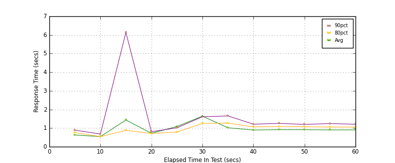
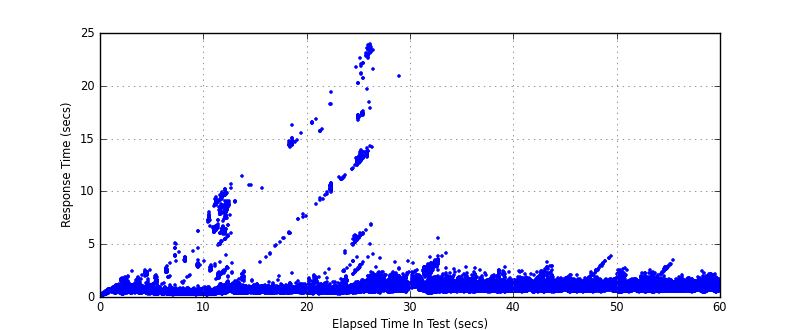
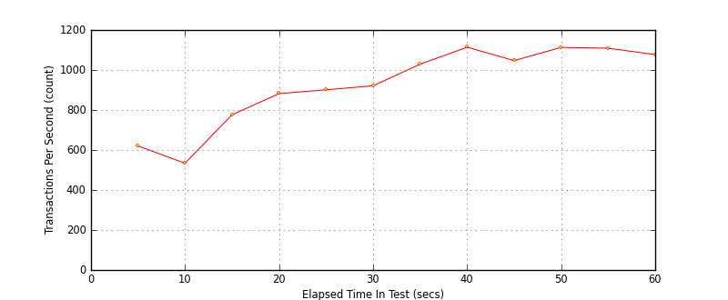

Performance Results Report
Summary
transactions: 56648
errors: 0
run time: 60 secs
rampup: 0 secs
test start: 2017-05-24 17:58:50
test finish: 2017-05-24 17:59:50
time-series interval: 5 secs
workload configuration:
| group name | threads | script name |
|---|
| user_group-21 | 40 | redis_stress.py |
| user_group-20 | 40 | redis_stress.py |
| user_group-23 | 40 | redis_stress.py |
| user_group-22 | 40 | redis_stress.py |
| user_group-25 | 40 | redis_stress.py |
| user_group-24 | 40 | redis_stress.py |
| user_group-2 | 40 | redis_stress.py |
| user_group-3 | 40 | redis_stress.py |
| user_group-1 | 40 | redis_stress.py |
| user_group-6 | 40 | redis_stress.py |
| user_group-7 | 40 | redis_stress.py |
| user_group-4 | 40 | redis_stress.py |
| user_group-5 | 40 | redis_stress.py |
| user_group-8 | 40 | redis_stress.py |
| user_group-9 | 40 | redis_stress.py |
| user_group-10 | 40 | redis_stress.py |
| user_group-11 | 40 | redis_stress.py |
| user_group-12 | 40 | redis_stress.py |
| user_group-13 | 40 | redis_stress.py |
| user_group-14 | 40 | redis_stress.py |
| user_group-15 | 40 | redis_stress.py |
| user_group-16 | 40 | redis_stress.py |
| user_group-17 | 40 | redis_stress.py |
| user_group-18 | 40 | redis_stress.py |
| user_group-19 | 40 | redis_stress.py |
All Transactions
Transaction Response Summary (secs)
| count | min | avg | 80pct | 90pct | 95pct | max | stdev |
|---|
| 56648 | 0.053 | 0.980 | 1.037 | 1.253 | 1.587 | 23.871 | 1.380 |
Interval Details (secs)
| interval | count | rate | min | avg | 80pct | 90pct | 95pct | max | stdev |
|---|
| 1 | 3104 | 620.80 | 0.053 | 0.628 | 0.757 | 0.890 | 1.033 | 2.535 | 0.286 |
| 2 | 2674 | 534.80 | 0.175 | 0.543 | 0.540 | 0.678 | 1.464 | 6.203 | 0.583 |
| 3 | 3880 | 776.00 | 0.173 | 1.433 | 0.880 | 6.134 | 8.206 | 11.407 | 2.355 |
| 4 | 4410 | 882.00 | 0.305 | 0.721 | 0.711 | 0.805 | 0.896 | 16.219 | 1.222 |
| 5 | 4508 | 901.60 | 0.268 | 1.085 | 0.781 | 1.013 | 2.290 | 21.757 | 2.275 |
| 6 | 4607 | 921.40 | 0.377 | 1.639 | 1.251 | 1.608 | 2.798 | 23.871 | 3.148 |
| 7 | 5149 | 1029.80 | 0.321 | 1.015 | 1.267 | 1.653 | 2.348 | 5.547 | 0.547 |
| 8 | 5574 | 1114.80 | 0.404 | 0.896 | 1.065 | 1.209 | 1.360 | 2.830 | 0.271 |
| 9 | 5238 | 1047.60 | 0.399 | 0.914 | 1.084 | 1.250 | 1.441 | 3.286 | 0.296 |
| 10 | 5565 | 1113.00 | 0.422 | 0.913 | 1.071 | 1.198 | 1.313 | 3.819 | 0.255 |
| 11 | 5549 | 1109.80 | 0.442 | 0.902 | 1.058 | 1.241 | 1.491 | 2.850 | 0.306 |
| 12 | 5389 | 1077.80 | 0.390 | 0.904 | 1.056 | 1.206 | 1.343 | 3.492 | 0.248 |
Graphs
Response Time: 5 sec time-series

Response Time: raw data (all points)

Throughput: 5 sec time-series
